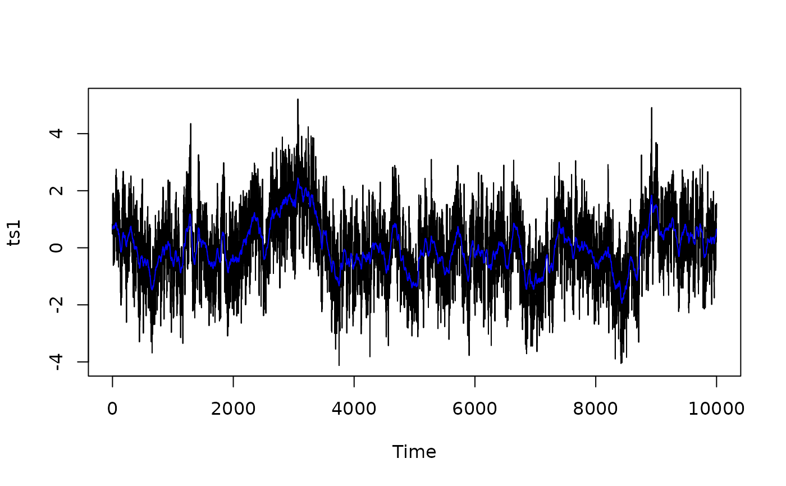
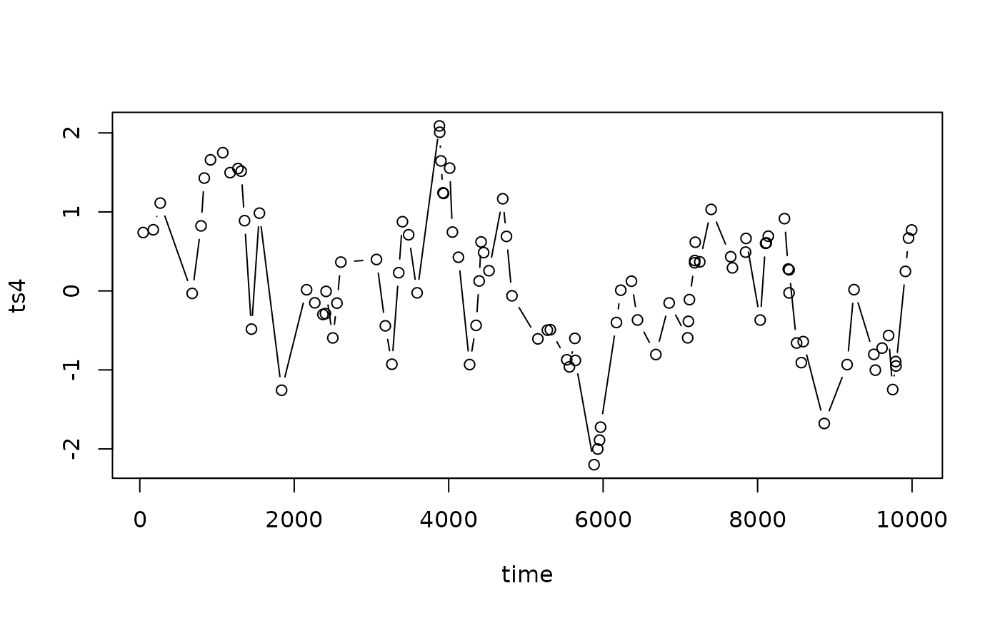
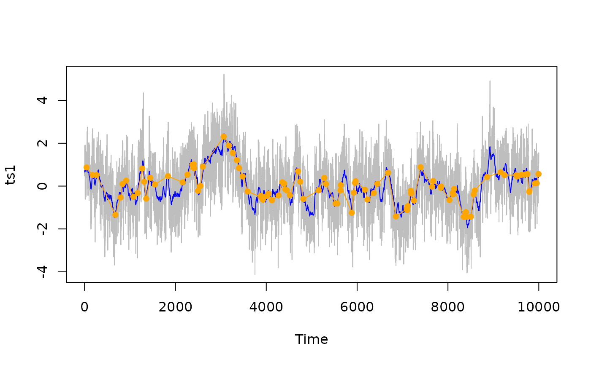
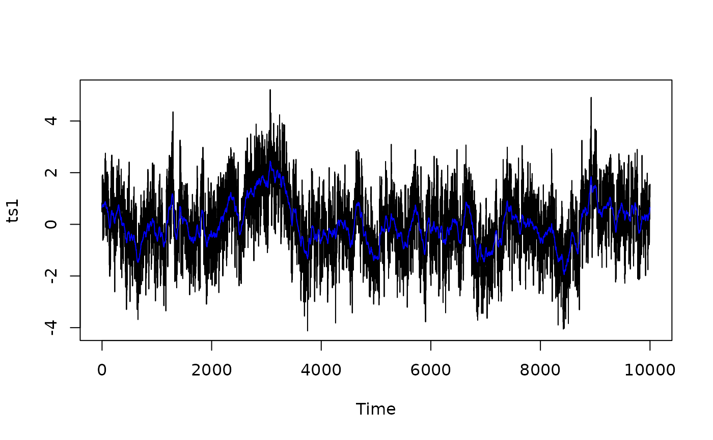
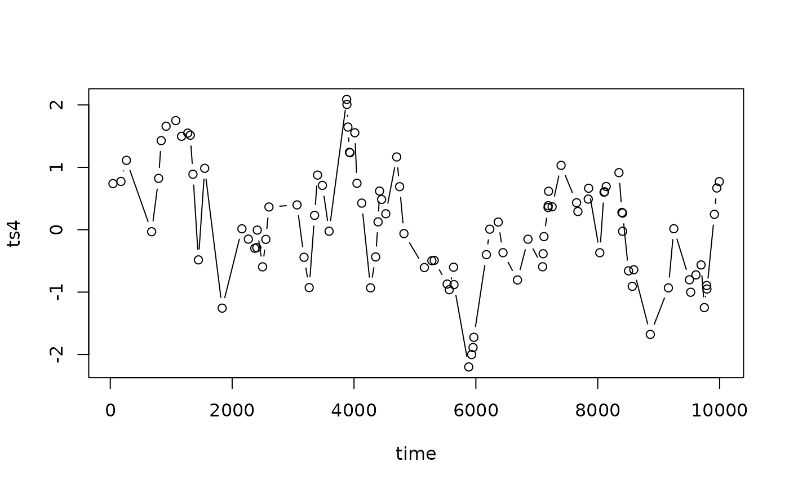
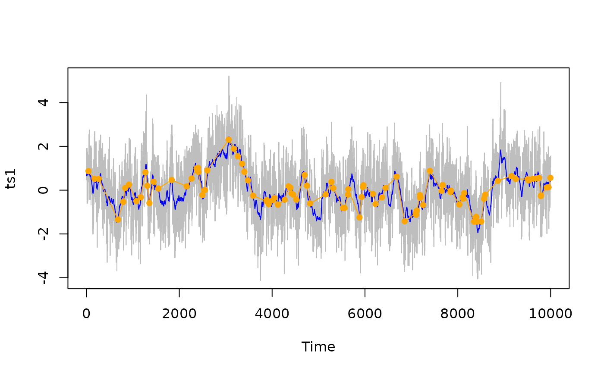

Simulate a Proxy Time Series Assuming a Power-Law Power Spectrum of the Climate
SimProxySeries.RdThis function creates a time series that is designed such that it can be interpreted as a typical paleo proxy record. It corresponds to what one may expect when an underlying signal, exhibiting power-law frequency scaling over a finite range of frequencies (from f_low to f_high), is subject to archive and laboratory smoothing and then subsampled at potentially unequally spaced sampling times, with a single noisy measurement made on a finite number of signal carriers retrieved from the same physical sample.
Usage
SimProxySeries(
a = -1,
b = 1,
nt = 100,
f.scl = 1,
smth.arch = list(type = "n", tau = 0),
smth.lab = list(type = "n", tau = 0),
N = 0,
t.smpl = NULL,
var.noise = 0,
val = 0,
rseeds = c(NA, NA, NA),
nser = 1
)
sim.proxy.series(
a = -1,
b = 1,
nt = 100,
f.scl = 1,
smth.arch = list(type = "n", tau = 0),
smth.lab = list(type = "n", tau = 0),
N = 0,
t.smpl = NULL,
var.noise = 0,
val = 0,
rseeds = c(NA, NA, NA),
nser = 1
)Arguments
- a
If a >= 0: proportionality constant of the underlying expected power spectral density P = a * f^-b.
If a < 0: expected mean square (variance) of the final time series (the value of the function). Thus, the underlying power spectral density is given by P ~ f^-b.
- b
Scaling exponent of the underlying power spectral density P = a * f^-b.
- nt
Determines the lower cut-off frequency: f_low = f.scl / nt.
If t.smpl == NULL: number of sampling times (length of the final time series).
- f.scl
If t.smpl != NULL: Scales the cut-off frequencies (lower and upper): f_low = f.scl / nt, and f_high = f.scl * 0.5.
If t.smpl == NULL: f.scl has no effect.
- smth.arch
Sets type and time scale of archive smoothing. Possible values of type are "n": no archive smoothing; "bioturbation": 'Berger and Heath' impulse response function, with a Lorentzian-shaped squared spectral transfer function 1 / (1 + (2*pi*f*tau)^2); "diffusion": Gaussian-shaped squared spectral transfer function exp(-(2*pi*f*tau)^2).
Possible values of tau are positive real numbers. Setting tau == 0 is equivalent to setting type="n".
- smth.lab
Sets type and time scale of laboratory smoothing. Possible values of type are "n": no archive smoothing "rect": a rectangular window in the time domain (archive slice) -> Squared-sinc-shaped squared spectral transfer function sinc^2(pi*f*tau)
Possible values of tau are positive real numbers. Setting tau == 0 is equivalent to setting type="n".
- N
N > 0: Finite number of signal carriers used for a single measurement, implying an additional sample white noise scaled by 1/N. N == 0: Infinite number of signal carriers, implying no additional sample white noise.
- t.smpl
The desired (arbitrary) sampling times (may contain duplicated entries and does not need to be ordered in time). If t.smpl == NULL: sampling times are 0:(nt-1), using the FFT algorithm for fast computation. If t.smpl != NULL: specifies the desired arbitrary (and potentially unequally spaced) sampling times. When set to 0:(nt-1), the result is identical to that obtained with t.smpl == NULL, but computation is (potentially much) slower because FFT algorithm is not used.
- var.noise
Variance of additional sample white noise (which may represent, for example, measurement noise).
- val
If val == 0: the value of the function is the time series.
If val > 0: the value of the function is a list that holds information regarding the true PSD. It has the components
$fax: the frequency axis $psd: the power spectral density $var: the variance of the total sample white noise (component exists only if the sample white noise is not included in the component $psd, see below)
Possible positive values of val are
1: $psd holds the full PSD, including the sample white noise; vectors $psd and $fax are limited to those elements where $fax > 0
2: $psd holds the PSD excluding the sample white noise, the variance of which is provided in the component $var; vectors $psd and $fax are limited to those elements where $fax > 0
3: same as '1', but the vectors $psd and $fax extend over all frequencies (including zero and the negative ones)
4: same as '2', but the vectors $psd and $fax extend over all frequencies (including zero and the negative ones)
Note: If t.smpl != NULL and val == 1 or val == 3, then the function internally sets val <- val + 1, because t.smpl might specify unequally spaced sampling times such that the PSD of the sample white noise might not be defined.
- rseeds
vector of length 3, integer or NA. Random seeds to fix the realisation of specific random processes. There are three random processes:
process-1 (controlled by rseeds[1]) represents the climate process-2 (controlled by rseeds[2]) represents the signal carrier mixing paths process-3 (controlled by rseeds[3]) represents the additional sample white noise (e.g., measurement noise)
If rseeds[i] == NA: a random sequence is drawn with rnorm() without setting a specific random seed before.
If rseeds[i] == integer: a random seed is set with set.seed(rseeds[i]) and then a random sequence is drawn with rnorm. After this draw the random number generator is reset to its previous state in order to avoid any interference with other calls to the random number generator inside or outside of sim.proxy.series.
- nser
integer (>=1) If val == 0: number of time series generated (all with the same parameters). If val > 0: nser has no effect.
See also
Other functions to generate timeseries with powerlaw like spectra:
SimFromEmpiricalSpec(),
SimPLS(),
SimPowerlaw()
Examples
## Generate a power-law timeseries with no proxy archiving or measurement effects
n = 1e04
set.seed(1)
ts1 <- SimProxySeries(a = 0.1, b = 1, nt = n)
ts1 <- ts(ts1, deltat = 1)
plot(ts1)
sp1 <- SpecMTM(ts1)
LPlot(sp1, col = "grey")
abline(log10(0.1), -1, col = "black")
 ## Generate the same climate timeseries (by setting seed the same) but with smoothing
## from bioturbation
tau_b <- 50
set.seed(1)
ts2 <- SimProxySeries(a = 0.1, b = 1, nt = n,
smth.arch = list(type = "bioturbation", tau = tau_b))
ts2 <- ts(ts2, deltat = 1)
plot(ts1)
lines(ts2, col = "blue")

sp2 <- SpecMTM(ts2)
LPlot(sp1, ylim = range(c(sp1$spec, sp2$spec)), col = "grey")
abline(log10(0.1), -1, col = "black")
LLines(sp2, col = "blue")
## Then add measurement error
set.seed(1)
ts3 <- SimProxySeries(a = 0.1, b = 1, nt = n,
smth.arch = list(type = "bioturbation", tau = tau_b),
var.noise = 0.1^2)
ts3 <- ts(ts3, deltat = 1)
sp3 <- SpecMTM(ts3)
LLines(sp3, col = "pink")
abline(h = 1/2*(0.1^2 / diff(range(sp3$freq))), col = "red")
## sample time series at arbitrary times
#' set.seed(1)
time <- runif(100, 0, n)
ts4 <- SimProxySeries(a = 0.1, b = 1, nt = n, t.smpl = time,
smth.arch = list(type = "bioturbation", tau = tau_b),
var.noise = 0.1^2)
dat <- data.frame(time = time, ts4 = ts4)
dat <- dat[order(time), ]
plot(ts4~time, data = dat, type = "b")

# Note: even though seed was set, these points will not be from the same
# timeseries as ts3.
## Alternatively, generate the whole timeseries and subset at the desired
## timepoints if integer timepoints are acceptable. This can often be faster
## as it allows the fast FFT algorithm to be used.
time <- round(sort(time))
ts3_sub <- ts3[time]
plot(ts1, col = "grey")
lines(ts2, col = "blue")
lines(time, ts3_sub, col = "Orange", pch = 16)
points(time, ts3_sub, col = "Orange", pch = 16)

## Generate the same climate timeseries (by setting seed the same) but with smoothing
## from bioturbation
tau_b <- 50
set.seed(1)
ts2 <- SimProxySeries(a = 0.1, b = 1, nt = n,
smth.arch = list(type = "bioturbation", tau = tau_b))
ts2 <- ts(ts2, deltat = 1)
plot(ts1)
lines(ts2, col = "blue")

sp2 <- SpecMTM(ts2)
LPlot(sp1, ylim = range(c(sp1$spec, sp2$spec)), col = "grey")
abline(log10(0.1), -1, col = "black")
LLines(sp2, col = "blue")
## Then add measurement error
set.seed(1)
ts3 <- SimProxySeries(a = 0.1, b = 1, nt = n,
smth.arch = list(type = "bioturbation", tau = tau_b),
var.noise = 0.1^2)
ts3 <- ts(ts3, deltat = 1)
sp3 <- SpecMTM(ts3)
LLines(sp3, col = "pink")
abline(h = 1/2*(0.1^2 / diff(range(sp3$freq))), col = "red")
## sample time series at arbitrary times
#' set.seed(1)
time <- runif(100, 0, n)
ts4 <- SimProxySeries(a = 0.1, b = 1, nt = n, t.smpl = time,
smth.arch = list(type = "bioturbation", tau = tau_b),
var.noise = 0.1^2)
dat <- data.frame(time = time, ts4 = ts4)
dat <- dat[order(time), ]
plot(ts4~time, data = dat, type = "b")

# Note: even though seed was set, these points will not be from the same
# timeseries as ts3.
## Alternatively, generate the whole timeseries and subset at the desired
## timepoints if integer timepoints are acceptable. This can often be faster
## as it allows the fast FFT algorithm to be used.
time <- round(sort(time))
ts3_sub <- ts3[time]
plot(ts1, col = "grey")
lines(ts2, col = "blue")
lines(time, ts3_sub, col = "Orange", pch = 16)
points(time, ts3_sub, col = "Orange", pch = 16)
